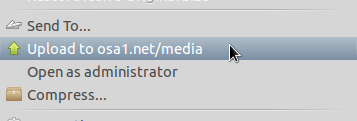

April 9, 2011 - Tagged as: python, tr.
Şöyle birşey farkettim: Natuilus-Python.
Bu sayede yazdığımız scriptler sağ tık -> scripts altında değil, direkt sağ tık menüsünde gözükebilir. Fakat asıl olayı bu değil. Bize seçili dosyalar hakkında çok daha fazla seçenek sunuyor, örneğin script seçeneğinin sadece istenilen formatlarda gözükmesini sağlayabiliyoruz. Scriptimizin icon’u oluyor vs.
Kullandığım nautilus scriptlerini güncellemeye başladım. Hepsini bu hale getireceğim. Şimdilik osa1.net/media’ya upload etmek için kullandığım scripti uyarladım.

Dikkat edilmesi gereken nokta, scriptin işini bitirene kadar natuilus cevap veremiyor, herhangi bir klasör açamıyorsunuz örneğin. Ben subprocess.Popen() ile gerekli scriptleri çalıştıyorum. Scriptin son halini github alanıma koydum.